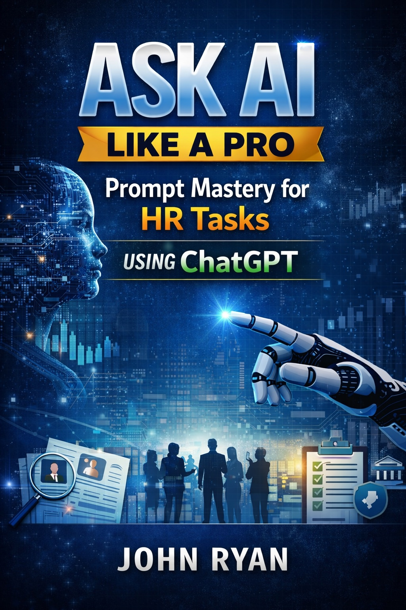

Are you an HR professional struggling to keep up with recruiting pipelines, endless reports, and constant policy updates?
Ask AI Like a Pro is your ultimate guide to mastering AI prompts for HR tasks and transforming how you work.
Buy on Amazon TodayDraft inclusive and compelling job descriptions and interview questions in minutes
Build accurate and actionable HR reports for Workday and other HR systems
Write clear, compliant, and understandable HR policies for employees and management
Advanced techniques for refining AI output and maximizing accuracy
Streamline daily HR tasks, including email responses, SOPs, and employee communications
Use ChatGPT safely and effectively without exposing confidential data
Get instant access to proven, ready-to-use ChatGPT prompts that help HR professionals work faster, think clearer, and make better decisions.
Purchase on Amazon NowAvailable instantly on Kindle • Practical, real-world focus • Written by an experienced Workday professional
Yes, when used responsibly and in line with company data and privacy policies...
ChatGPT can assist with job descriptions, interview guides, policy drafts...